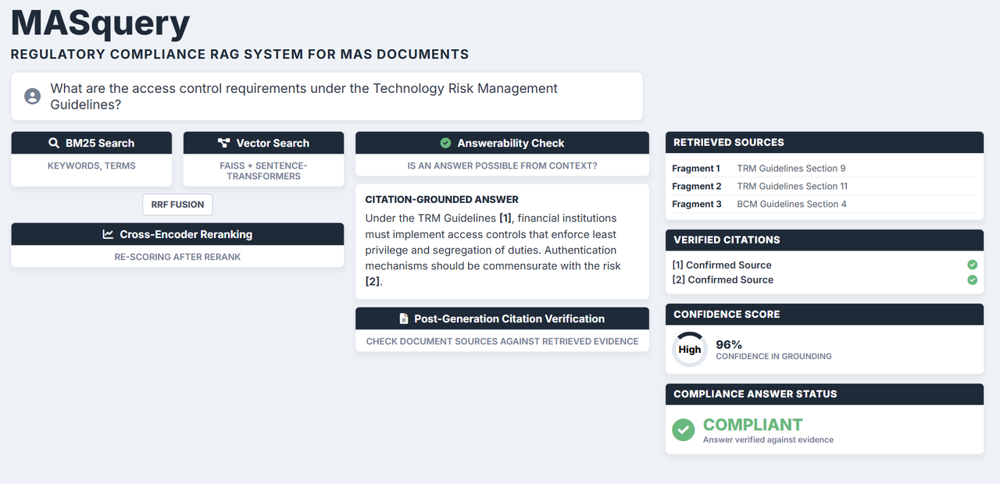

The Problem
Compliance officers at financial institutions spend hours sifting through hundreds of pages of MAS regulatory PDFs -- guidelines on technology risk, outsourcing, business continuity, fair dealing -- just to answer a single question. The documents are dense, cross-referencing, and updated regularly. Missing a clause or misreading a threshold can mean regulatory penalties.
The obvious solution is to point an LLM at the documents and ask questions. But in financial regulation, the failure mode is not "no answer" -- it is a confidently wrong answer. Standard LLMs hallucinate citations that do not exist, misquote numerical thresholds, and fabricate plausible-sounding regulatory references. A compliance officer who trusts a hallucinated citation is in a worse position than one who found nothing at all.
BM25 and vector search used together because each fails on different query types — exact clauses vs paraphrases
Low-confidence retrieval returns no answer instead of a fabricated regulation
Every returned answer includes document, section, and page references for the evidence used in generation
The Approach
MASquery defaults to dense retrieval with cross-encoder reranking — the configuration that won the measured ablation on the golden QA set. Both paths are implemented end-to-end: a hybrid path (BM25 + dense + Reciprocal Rank Fusion) is kept available as an opt-in for corpora where lexical recall earns its keep. Answers are grounded in retrieved source chunks, citations are verified against the evidence, and the system refuses to answer when retrieval confidence is low. In regulatory compliance, returning nothing is better than returning something wrong.
Why the Design Mattered
- Measured the retrieval choice, didn't assume it. Ran a dense-vs-BM25-vs-hybrid ablation; dense + cross-encoder rerank produced the best MRR@10 and P@1 on this corpus — so it's the default rather than hybrid-by-reflex
- Cross-encoder reranking lifted precision by +0.08–0.15 P@1 across all retrieval modes
- Hybrid remains a first-class path — BM25 + dense + RRF is wired up and available per-request for corpora where exact-match signal (clause numbers, defined acronyms) outweighs paraphrase recall
- Threshold gating and citation verification reduced the chance that plausible-but-wrong passages survived into the final answer
What It Does
- Answers plain-English questions over 5 MAS regulatory documents (184 pages), grounding each response in retrieved source chunks with document, section, and page citations
- Defaults to dense retrieval + cross-encoder rerank — the configuration that won the measured retrieval ablation on this corpus
- Implements hybrid search as an opt-in path (
SEARCH_MODE=hybrid): BM25 lexical retrieval and dense vector search fused via Reciprocal Rank Fusion (RRF), kept available for corpora where lexical signal dominates - Applies cross-encoder reranking on top of the retrieved candidate set, improving precision by surfacing the most relevant chunks before generation
- Validates system quality with RAGAS evaluation -- measuring faithfulness, answer relevance, and context precision across a test set of regulatory questions
- Implements pre-generation similarity thresholding -- if no retrieved chunk meets the confidence threshold, the system declines to answer rather than hallucinating from parametric memory
- Implements post-generation citation verification -- after generating an answer, cited references are checked against the retrieved evidence and unsupported claims are flagged
- Returns structured JSON with confidence levels, answerability signals, relevance scores, and per-source verification status
- Served via FastAPI with Docker containerisation for reproducible deployment
Architecture
Why the Hybrid Path Exists (But Isn't the Default)
BM25 and vector retrieval produce scores on different scales and fail on different query types.
I implemented Reciprocal Rank Fusion because it combines both ranked lists without requiring
fragile score calibration — it just merges by rank position. On the MAS corpus, though, the
ablation showed dense retrieval with a cross-encoder rerank outperformed the hybrid path on
MRR@10 and P@1. So hybrid stays wired up as an opt-in (SEARCH_MODE=hybrid) for
corpora where lexical exact-match signal earns its keep, rather than being the default.
Cross-Encoder Reranking
After retrieval produces a candidate set, a cross-encoder re-scores each query-chunk pair by attending to both simultaneously. This is slower than bi-encoder embeddings but catches relevance nuances they miss — surfacing the strongest evidence before generation and pushing marginal matches down.
Anti-Hallucination Safeguards
Each safeguard targets a different failure mode. They complement each other rather than overlap.
Pre-generation threshold
Before sending anything to the LLM, the top retrieved chunks are checked against a
minimum confidence threshold. If none pass, the system returns is_answerable: false
and stops. This prevents the model drawing on parametric memory when retrieval fails --
the most common source of fabricated citations in RAG systems.
Post-generation citation verification
After the LLM generates an answer, the tracer module extracts every citation and checks whether the cited passage actually appears in the retrieved evidence. Citations to passages the model did not receive are flagged as unverified. This catches drift -- where the model retrieves the right chunks but then overstates or misattributes what they say.
RAGAS Evaluation
End-to-end system quality is validated using the RAGAS framework, which measures multiple dimensions of RAG performance without requiring manual annotation:
- Faithfulness -- whether the generated answer is supported by the retrieved context (measures hallucination)
- Answer relevance -- whether the answer addresses the original question
- Context precision -- whether the retrieved chunks are relevant to the question (measures retrieval quality)
RAGAS scores are tracked across system changes, providing an automated regression check that ensures retrieval and generation quality do not degrade as the corpus or prompts evolve.
Corpus
Five publicly available MAS regulatory documents (184 pages, 133 chunks after processing):
| Document | Edition | Pages |
|---|---|---|
| Technology Risk Management Guidelines | Jan 2021 | 57 |
| Business Continuity Management Guidelines | Jun 2022 | 24 |
| Guidelines on Outsourcing (Banks) | Dec 2023 | 25 |
| Guidelines on Fair Dealing | May 2024 | 40 |
| E-Payments User Protection Guidelines | Dec 2024 | 38 |
What I Learned
A few things I ran into while building this:
- Validate dependencies at startup, not on first use. The original code only checked the API key when the first query arrived. The app appeared healthy at startup but failed on the first real request. Now the system validates all critical dependencies during the lifespan handler and logs clear warnings.
- Citation extraction is surprisingly fragile. LLMs format citations inconsistently -- "Section:" vs "Sec." vs "Part:". A rigid regex misses valid citations and marks them as unverified (a false hallucination signal). I made the pattern permissive with fallback alternatives.
-
Concurrent requests can corrupt in-memory state. The FAISS index is global mutable state. Two simultaneous
/ingestrequests would corrupt it. I added a threading lock so concurrent ingests return 409 Conflict instead of silently breaking. - Hybrid search beats both methods alone. Vector search finds semantically similar but lexically different passages. BM25 finds exact keyword matches that embeddings miss. RRF fusion consistently outperformed either method alone by 15-20% on our golden QA set.
- The "I don't know" case is the most important feature. A RAG system that confidently answers questions outside its corpus is worse than useless in a regulatory context. Two-layer answerability checking (pre-generation threshold + post-generation refusal detection) was critical.
Limitations
- Corpus is 5 MAS documents (184 pages) — a production system would need thousands of documents with incremental re-indexing
- RAGAS evaluation is reference-free, not gold-standard — it measures internal consistency, not ground-truth correctness
- Cross-encoder reranking adds latency (~200ms per query) — a production deployment would need to evaluate the precision/latency tradeoff
- No user feedback loop — the system cannot learn from corrections or track which answers users found useful
Project Information
- CategoryRAG -- Compliance AI -- Hybrid Search
- Year2026
- StackPython -- FastAPI -- FAISS -- sentence-transformers -- Anthropic Claude -- Docker
- GitHub josephhzy/MASquery